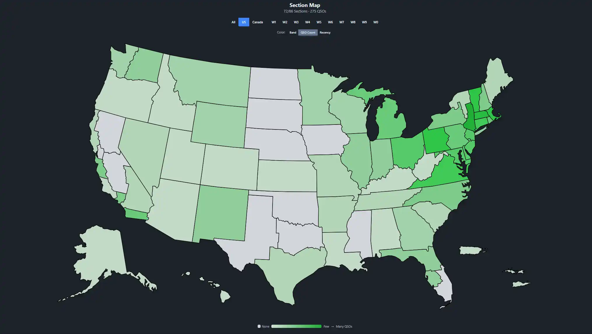

Most Field Day software stops at contact logging. FD Commander handles the whole operation: volunteer coordination, station setup, safety compliance, built-in multi-station logging, integration with the software your operators already run, and real-time scoring across every station.
Define your stations, assign equipment, build the volunteer schedule, and run through safety checklists, all in one place. When Field Day arrives, your club shows up and everything is already organized.
Multiple operators on multiple devices entering contacts at the same time. FD Commander merges everything into a single, unified log in real time. No conflicts, no manual deduplication after the event.
Already running WSJT-X for FT8, N1MM Logger+ for CW, or fldigi for RTTY? FD Commander receives contacts directly from those programs over UDP, so operators don't have to double-log. You can also import an ADIF file after the fact with a guided wizard that parses the file, maps stations, validates records, and lets you review everything before it hits your log.
Two layers of resilience. First: the entire platform runs on your LAN and doesn't need the internet. Second: if a browser temporarily loses its connection to the server, contacts will queue locally and sync when it reconnects. Need remote access? The app is secure enough to put on the internet too.
Power multipliers, bonus points, and band breakdowns are all calculated as contacts come in. For Winter Field Day, the same page tracks objectives and their multipliers instead. Put the dashboard on a big screen so the whole club can see where things stand.
Pick Winter Field Day as the event type and the app switches rulebooks. The power multiplier and GOTA go away, bonuses become objectives, and the score becomes QSO points × (OM + 1). Band, mode, and QRP objectives fill in from your log on their own, and the bulletin objective is earned when you save your copy. The rest you claim from the event page once you've done them.
Stations can run on club computers, members' own laptops, or a mix. When a computer stays at a station and operators take turns on it, use station mode. A station captain binds the computer to its station once, and after that operators sit down, type their callsign, and start logging. Nobody needs a password.
The Section Map gives your whole club a live, visual picture of how the event is going. Every ARRL and RAC section lights up as contacts come in. Filter by call area or switch between color modes to see band distribution, QSO density, or how recently each section was worked. Put it on a big screen at the site and let everyone see which sections you still need.

Build the full 24-hour schedule before the event starts. Operators can sign themselves up for open slots, and the shift dashboard shows managers a timeline of every role, overall coverage, and the upcoming shifts nobody has filled yet.
Every operator has a personal "My Catalog" for their own gear. Commit equipment to upcoming events, assign gear to stations, and track availability across the whole operation.
| Make/Model | Type | Assigned To | Status |
|---|---|---|---|
| Icom IC-7300 | Radio | Station 1 | Delivered |
| Yaesu FT-991A | Radio | Station 2 | Delivered |
| Fan Dipole (80/40/20) | Antenna | Station 1 | Committed |
| Hex Beam | Antenna | Station 3 | Committed |
| TH-D75A | Radio | - | Returned |
Field Day is a public event. When visitors come to check out your operation, they can sign the digital guestbook right from any device on the network. Elected official and agency visits count toward ARRL bonus points, and the rest builds a record of community engagement.
Upload photos as the event unfolds: antenna raises, station setups, the team working pileups at 2 AM. Everything is stored on the local server, and operators can contribute from any device on the network.
FD Commander is free, open source, and built by hams. Clone the repo and deploy in minutes.